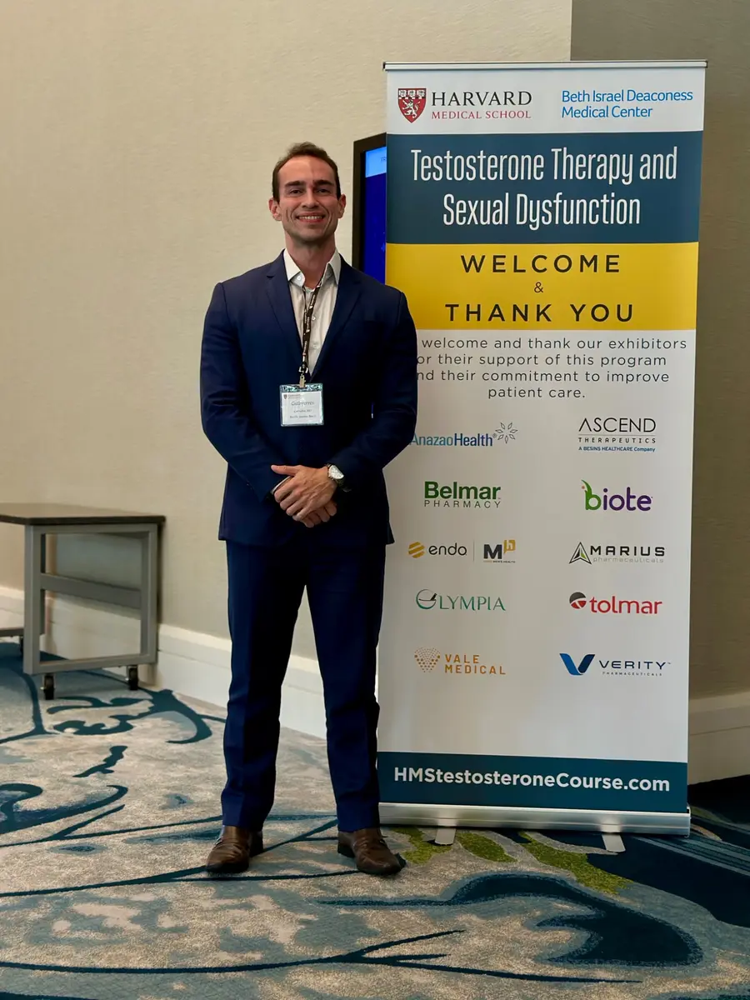

Segurança para prescrever em reposição hormonal e emagrecimento
Eu ajudo médicos que estão começando na área de emagrecimento e reposição hormonal a ganharem segurança nas suas condutas, entregarem resultados consistentes e fidelizarem o paciente, com base em fisiologia e nas melhores evidências.

Essa mentoria é para o médico que quer viver do consultório
É para você se:
- Quer se tornar referência na área
- Quer entregar resultados consistentes com segurança e embasamento científico
- Quer viver do seu trabalho no consultório
- Quer deixar de dar plantões
- Quer crescer na carreira
Não é para você se:
- Deseja trabalhar com planos de saúde
- Deseja atender por preços populares
- Deseja seguir protocolos prontos
- Coloca o faturamento acima do bem-estar do paciente
Teoria aprofundada e prática clínica real, durante seis meses
A Mentoria Médica do Dr. Guthyerres Carvalho é um programa para médicos que desejam aprofundar seus conhecimentos em emagrecimento e reposição hormonal. Diferente de cursos tradicionais, combina aulas teóricas com discussão de casos reais e, na modalidade presencial, acompanhamento da rotina de consultório.
Todos os protocolos, prescrições e condutas ficam abertos e disponíveis para discussão. A mentoria é estruturada para que cada participante saia apto a prescrever sem receio, com segurança nas condutas.
Prática real em consultório
Na modalidade presencial, você acompanha atendimentos reais lado a lado com o Dr. Guthyerres, com total privacidade (apenas você, o paciente e o mentor), observando a aplicação dos protocolos em casos complexos e variados.
Aulas exclusivas e atualizadas
O conteúdo teórico é atualizado com as evidências mais recentes e adaptado a cada turma: dos fundamentos fisiológicos às técnicas avançadas de tratamento, com aulas gravadas e encontros ao vivo.
Discussão de casos clínicos
Análise detalhada de casos reais, com o raciocínio por trás de cada diagnóstico, conduta e resultado obtido na prática clínica.
Suporte e comunidade
Suporte via WhatsApp e acesso a uma comunidade exclusiva de alunos para troca de experiências e dúvidas, com networking entre médicos da mesma área.
O que você vai estudar na mentoria
Fisiologia hormonal
Estudo aprofundado dos mecanismos hormonais e sua influência no metabolismo, na composição corporal e na saúde geral.
Emagrecimento
Estratégias personalizadas e baseadas em evidências para promover a perda de peso saudável e sustentável.
Reposição hormonal
Diagnóstico e tratamento de desequilíbrios hormonais em diferentes faixas etárias, com base em fisiologia e nas melhores evidências.
Implantes hormonais
A técnica completa de implantes, da indicação à aplicação e ao acompanhamento dos resultados.
Casos clínicos
Análise de casos reais, com discussão de diagnósticos, condutas e resultados obtidos na prática clínica.
Gestão do consultório
Organização do consultório, planejamento financeiro e fiscal, gestão de pacientes e otimização de custos.
Duas formas de participar
O conteúdo teórico e a discussão de casos são os mesmos nas duas modalidades. A presencial acrescenta o acompanhamento dos atendimentos no consultório.
Mentoria Online
Para quem quer o conteúdo completo e a discussão de casos, de qualquer cidade.
- Aulas gravadas na área de membros, para assistir quando quiser
- Encontros ao vivo para discussão de casos e dúvidas
- Protocolos, prescrições e condutas abertos para discussão
- Suporte via WhatsApp e comunidade de alunos
Mentoria Presencial
Tudo da mentoria online, mais a vivência do consultório na Clínica QORA, no Rio de Janeiro.
- Tudo o que está incluído na mentoria online
- Acompanhamento de atendimentos reais ao lado do Dr. Guthyerres
- Observação do relato dos pacientes, dos exames e da evolução
- Prática supervisionada no manejo de terapias hormonais e implantes
Esta mentoria não é indicada para médicos que pretendem atender a preços populares ou por planos de saúde.
O que dizem os médicos que participaram
Realmente foi um divisor pra mim e eu já via isso nas primeiras aulas. Guthyerres conseguiu me fazer amar fisiologia, porque qualquer coisa que ele prescreve ele me mostra na fisiologia.
Hoje fica tudo muito claro pra mim, tanto do que fazer quanto do que não fazer. Vivo tirando dúvidas com ele, mas hoje estou muito mais segura.
Ler mais
Tô muito satisfeita em saber que meu dinheiro foi investido na pessoa certa (e meio que no escuro, porque me indicaram ele e apenas confiei).
Ao mesmo tempo que ele conversa comigo sobre faturamento e venda, ele não faz nada passando por cima, enganando ou enchendo linguiça pro paciente. Ele simplesmente faz porque acredita que vai dar resultado. E dá! Fideliza o paciente pelo resultado.
Não estou puxando saco, só dando meu feedback como uma pessoa que decidiu investir dinheiro nisso e que tá valendo muito a pena.
Eu já havia feito outros cursos, mas tinha muita dúvida, muita insegurança. Ele solucionou todas as minhas dúvidas, teve bastante prática.
Eu já terminei a mentoria atuando no meu consultório e implementando essa nova prática de implantes hormonais, o que mudou o perfil do meu consultório.
Ler mais
Eu tenho hoje um faturamento acima de 100 mil e era uma meta de vida. Hoje eu já tenho até outras metas. Oriento todo mundo a confiar no Guthyerres, que tem uma metodologia excelente para ensinar e muita paciência.
Quando me vi cheia de dúvidas em relação às terapias hormonais e aos implantes, sabia que precisava de alguém coerente, ético e com conhecimento de verdade, e imediatamente pensei nele.
Desde que fiz a mentoria, meu consultório evoluiu, minha carreira ganhou novos rumos e eu cresci como pessoa e como médica.
Ler mais
Pude oferecer o melhor para minhas pacientes, com mais segurança, embasamento e propósito. Sou eternamente grata por essa troca e por essa amizade que vem de tantos anos e que hoje também se traduz em admiração profissional.
Dr. Guthyerres Carvalho Santos
Médico com atuação em emagrecimento, reposição hormonal, menopausa e lipedema. Sua abordagem vai além dos sintomas e considera a história de vida e os aspectos metabólicos, emocionais e comportamentais de cada paciente.
Além da prática clínica, recebe e treina médicos que desejam aprofundar seus conhecimentos em hormônios e emagrecimento. Com a mentoria, já ajudou outros médicos a chegarem a 100, 200 e até 300 mil de faturamento. Vários dobraram ou triplicaram o faturamento e largaram os plantões.
- RegistroCRM-RJ 52-0107012-6
- AtendimentoClínica QORA, Barra da Tijuca, Rio de Janeiro
- AtualizaçãoParticipação em cursos e eventos médicos no Brasil e no exterior
Curso de Implantes Hormonais
Formação prática para médicos que desejam dominar a técnica de implantes hormonais, com fundamentação teórica e treinamento supervisionado: indicações, contraindicações, dosagens, aplicação e acompanhamento.
- Fundamentos da terapia hormonal e suas aplicações clínicas
- Técnicas de implante hormonal passo a passo
- Avaliação clínica e laboratorial para indicação de implantes
- Condutas personalizadas para diferentes perfis de pacientes
- Gestão de possíveis complicações e efeitos adversos
- Material didático e certificado de conclusão
Turmas reduzidas
Grupos pequenos para garantir atenção individualizada e melhor aproveitamento do conteúdo prático.
Flexibilidade de datas
Diversas opções de turmas ao longo do ano, para escolher a que melhor se adapta à sua agenda.
Garantia de satisfação
Se você estiver acompanhando as aulas e não sentir que está sendo útil para seu desenvolvimento profissional, tem direito a reembolso.
Quero participar da próxima turma
Preencha os dados ao lado. Sua candidatura abre uma conversa no WhatsApp com a equipe do Dr. Guthyerres, que retorna com as próximas datas e tira suas dúvidas.
- WhatsApp: +55 21 99038-4471
- Instagram: @guthyerrescs
- Presencial: Av. João Cabral de Mello Neto, 850, bloco 2, sala 323, Barra da Tijuca, Rio de Janeiro